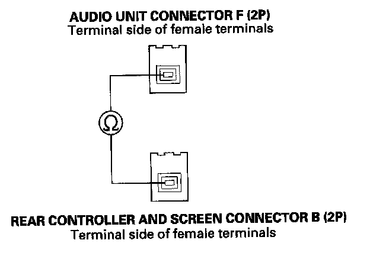
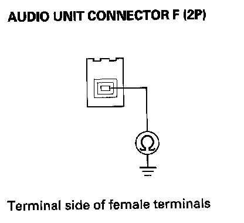
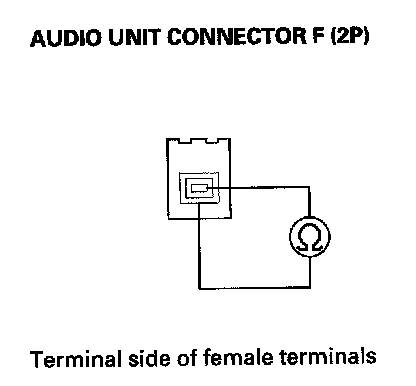

Wireless headphones do not work or there is static in DVD mode
Wireless headphones do not work or there is static in DVD modeNOTE: Check the battery condition first.
1. Check the "CONNECT" and "UNIT CHECK" of the rear entertainment system self-diagnostic.
If the self-diagnostic status indicator OK (Green color)?
YES - Go to the "Wireless headphone sound is weak, distorted, volume does not change, or there is no sound in all modes."
NO - Go to step 2.
2. Remove the audio unit.
3. Check that the audio unit connector F (2P) is properly connected to the audio unit.
Is the digital audio unit connector F (2P) connected properly?
YES - Go to step 4.
NO - Reconnect the audio unit connector F (2P) and recheck the wireless headphone function.
4. Remove the rear controller and screen.
5. Check that the rear controller and screen connector B (2P) is properly connected to the rear controller and screen.
Is the audio unit connector F (2P) connected properly?
YES - Go to step 6.
NO - Reconnect the audio unit connector F (2P) and recheck the wireless headphone function.
6. Disconnect the audio unit connector F (2P) from the audio unit and the rear controller and screen.

7. Check for continuity between the audio unit connector F (2P) No. 1 terminal and the rear controller and screen connector B (2P) No. 1 terminal.
Is there continuity?
YES - Go to step 8.
NO - Replace the digital audio lead.

8. Check for continuity between the audio unit connector F (2P) No. 1 terminal and body ground.
Is there continuity?
YES - Replace the digital audio lead.
NO - Go to step 9.

9. Check for continuity between the audio unit connector F (2P) No. 1 terminal No. 2 terminal.
Is there continuity?
YES - Replace the digital audio lead.
NO - Go to step 10.
10. Substitute a known-good audio unit and recheck the wireless headphone function.
Do the wireless headphones work in DVD mode?
YES - Replace the original audio unit.
NO - Replace the rear controller and screen.